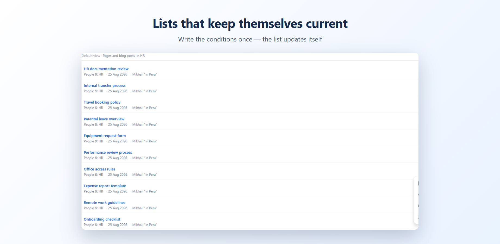

What are we no longer maintaining?
Confluence search finds a page when you know what you are looking for. It does not answer that question. Smart Search does, as a list that keeps itself current.
Every large wiki hides hundreds of pages nobody has touched in years: outdated policies, dead projects, instructions for systems long gone. They are invisible to search, because nobody remembers what to search for.
Put the macro on a page, pick conditions (a space, some labels, pages not updated for six months) and get a list. It refreshes itself: when a page is updated, it leaves the list on its own.
Nothing to learn. Everything is chosen from dropdowns, and the app shows in plain English what the list will contain before you save. If you do know CQL, switch to manual mode and write the query yourself.
Typical uses: find abandoned documentation before an audit, keep a review page that never goes stale, build an index of everything labelled for onboarding, show what your team published this month.
A list, not a snapshot
Pages appear and disappear as they change. A review page written once stays accurate for years without anyone touching it.

Conditions, not syntax
Pick a space, type a label, choose pages not updated for 180 days. The app writes the query and tells you in plain English what the list will contain.

Pricing
Free for teams up to 10 people. Above that, $1 per user per month, billed by Atlassian with your other apps.
A 25-person team pays $25 a month. Cancel from your Atlassian admin at any time.
The app runs entirely on Atlassian infrastructure under the Runs on Atlassian programme. Your pages are read inside your own Confluence site, nothing is stored by us, and nothing leaves your site.
Worried this app gets abandoned like the last one? Fair. Here is our answer to that.